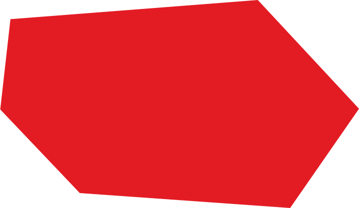

<section>
  <div class="w-full relative min-h-screen">
    
    
    
    
    
    
  </div>
  <div>
    <h3 class="w-[14rem] text-center absolute top-[52%] left-[26%] text-2xl z-[6] leading-6 text-webGrey md:hidden">
      We help you set focus and gain impact. By adding to the conversation, not
      to the noise.
    </h3>
  </div>
</section>